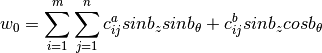
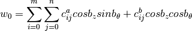
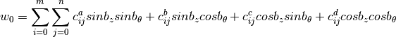
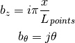
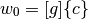

Measured Imperfections¶
Convenient routines to transform discrete measured data into continuous functions applicable in the semi-analytical analysis are provided in the compmech.conecyl.imperfections module.
The implemented geometric imperfection of this module is the one representing the normal displacement of the mid-surface and will be called Measured Geometric Imperfection (MGI).
The non-linear analysis using a MGI require the calculation
of the initial imperfection field, called  , and the corresponding
partial derivatives
, and the corresponding
partial derivatives  and
and  .
.
The function calc_c0 described below is implemented to find the best-fit for a given imperfection data. Three different approximation functions can be selected using the funcnum parameter.
The imperfection file should be in the form:
theta1 height1 imp1
theta2 height2 imp2
...
thetan heightn impn
where height is measured from the bottom to the top of the cylinder
or cone, parallel to the axial axis, and theta is the circumferential
coordinate  measured as shown
in the semi-analytical model.
measured as shown
in the semi-analytical model.
- compmech.conecyl.imperfections.calc_c0(path, m=40, n=40, funcnum=2, sample_size=None, maxmem=8, save=True)¶
Find the coefficients
 that best fit the function.
that best fit the function.The measured data will be fit using one of the following functions, selected using the funcnum parameter:

- (default)


where:

where
 represents the difference between the maximum and
the height values in the imperfection file divided by the cosine
of the semi-vertex angle:
represents the difference between the maximum and
the height values in the imperfection file divided by the cosine
of the semi-vertex angle:
In this form
 will vary from
will vary from  (at the top)
to
(at the top)
to  (at the bottom).
(at the bottom).Note
Note that if the measured sample does not cover all the height, it will be stretched.
The approximation can be written in matrix form as:

where
![[g]](../../_images/math/e5c181ab30f23cea7c86c455ea6ebc26edff132c.png) carries the base functions and
carries the base functions and  the respective
amplitudes. The solution consists on finding the best that minimizes
the least-square error between the measured imperfection pattern and the
function.
the respective
amplitudes. The solution consists on finding the best that minimizes
the least-square error between the measured imperfection pattern and the
function.Parameters: path : str or numpy.ndarray
The path of the file containing the data. Can be a full path using r"C:\Temp\inputfile.txt", for example. The input file must have 3 columns “

 ” expressed
in Cartesian coordinates.
” expressed
in Cartesian coordinates.This input can also be a numpy.ndarray object, with
, , in each corresponding column.m : int
Number of terms along the meridian (
 ).
).n : int
Number of terms along the circumference (
).funcnum : int, optional
As explained above, selects the base functions used for the approximation.
sample_size : int or None, optional
An in specifying how many points of the imperfection file should be used. If the default None is used all points file will be used in the computations.
maxmem : int, optional
Maximum RAM memory in GB allowed to compute the base functions. The scipy.interpolate.lstsq will go beyond this limit.
save : bool, optional
The default value True saves the calculated coefficients in the compmech/conecyl/imperfections/c0 folder.
Returns: out : numpy.ndarray
A 1-D array with the best-fit coefficients.
When implementing a non-linear analysis algorithm, see for example fsdt_donnell_bcn_nonlinear.pyx , the functions to calculate the partial derivatives of the geometric imperfection are accessible using Cython
from compmech.conecyl.imperfection.mgi cimport cfw0x, cfw0t
The cfw0x and cfw0t function headers are:
cdef void cfw0x(double x, double t, double *c0, double L,
int m, int n, double *w0xref, int funcnum) nogil
cdef void cfw0t(double x, double t, double *c0, double L,
int m, int n, double *w0xref, int funcnum) nogil
where c0 is the array containing the coefficients of the approximation
function, L is the meridional length of the cone or cylinder
(as shown here), x and t the and
coordinates, m and n the number of terms of the
approximation series as described above, and finally,
w0xref and w0tref are pointers to double variables.